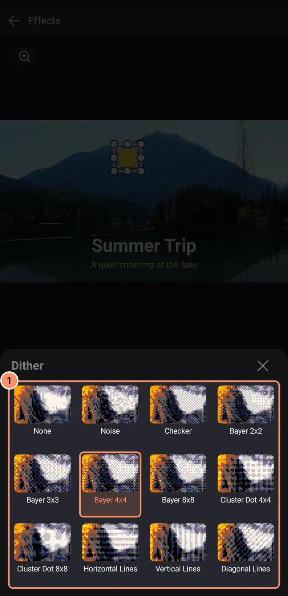

Paggamit ng mga epekto
Magdagdag, magpatong, mag-reorder, magtago, kumopya at mag-animate ng mga epekto, at hanapin ang tamang epekto sa library ng mga epekto.
Sa pahinang ito
Binabago ng isang epekto ang hitsura o galaw ng isang layer: isang blur, glow, pagbabago ng kulay, pagyanig. Maaaring magkaroon ng kahit ilang epekto ang isang layer. May 226 epekto ang AbsentMotion sa labindalawang kategorya. Inililista ng Library ng mga epekto sa website na ito ang bawat epekto kasama ang lahat ng mga setting nito.
Magdagdag ng epekto
- Pumili ng layer.
- I-tap ang Mga epekto sa tool grid.
- I-tap ang Magdagdag ng epekto sa dulo ng listahan. Bubukas ang Aklatan ng mga epekto.
- I-tap ang isang epekto. Idinadagdag ito kasama ang karaniwang mga setting nito at agad na bubukas ang mga setting nito.
Para basahin muna ang tungkol sa isang epekto, pindutin at hawakan ang tile nito. Bubukas ang isang pahina na may animated na preview, paglalarawan, bituin para markahan ito bilang paborito (napupuno ito kapag paborito na), + Karaniwang mga setting at, para sa ilang epekto, mga ready-made na preset.
Ang Aklatan ng mga epekto
- Sa itaas ay may search box ("Maghanap") na tumutugma muna sa mga pangalan, pagkatapos sa mga paglalarawan, at nakakahanap din ng mga AI tool at preset.
- Isang strip ng tatlong inirerekomendang epekto para sa napiling layer: hanggang dalawa na pinakamadalas mong gamitin sa ganoong uri ng layer (video, larawan, teksto, hugis, grupo o 3D model), at kahit isa man lang na bagay sa layer, gaya ng Chroma key para sa green-screen na clip. Ang mga epektong palagi mong nilalampasan ay nagbibigay-daan sa iba. Kasunod nito ang isang grid ng iyong Kamakailan o Paborito na mga epekto, pagkatapos ang mga kategorya. Para magpalit sa pagitan ng Kamakailan at Paborito, i-tap ang dalawang maliit na icon, mag-swipe pakaliwa o pakanan sa grid, o pindutin nang matagal ang mga icon hanggang mag-vibrate ang telepono at i-slide ang iyong hinlalaki (pakanan para sa Paborito, pakaliwa para sa Kamakailan).
- Mga kategorya: Kulay, Blur, Distort, I-istilo, Ingay, Pag-uulit, Key, Galaw, Beat, 3D, Teksto at Iba pa. Inililista lang ng kategoryang Bago ang mga epektong idinagdag sa kasalukuyang bersyon at sa mga update nito (5.3, 5.3.1 at iba pa). May lumilitaw na Audio na kategorya para sa mga layer na may tunog, at ang AI ang naglalaman ng mga AI tool.
- Naka-gray ang epektong hindi kayang tumakbo sa iyong telepono.
- Sa loob ng isang kategorya, mag-swipe pakaliwa para sa susunod na kategorya at pakanan para sa nauna.


Mga setting ng isang epekto
I-tap ang isang epekto sa listahan para buksan ito. Ang header nito ay may pangalan ng epekto, isang three-dot menu at isang trash can.

- Ang bawat numero ay may ruler at value box. I-tap ang pangalan ng isang setting para gawin itong target ng keyframe button. Ang mga setting na posisyon ay maaaring ilipat sa pamamagitan ng pag-drag sa preview.
- Ang isang color setting ay nagbubukas ng isang row ng mabilisang swatch at isang field para sa eksaktong kulay. Ipinapakita rin ng popup ang pangalan at mga kulay ng napiling palette; i-tap ang pangalan para buksan ang iyong mga palette.
- Ino-on o ino-off ng isang switch ang isang opsyon. Nagbubukas ng listahan ang isang pagpipilian.
- Ipinapakita ng palette setting (sa Mapa ng Palette at Retro Dither) ang lahat ng kulay nito. May mga palette ng lumang console at computer gaya ng PICO-8, Game Boy at Commodore 64 ang Mga preset. Binabasa ng I-import ang isang palette file: larawang may hanggang 256 kulay (ginagawang 256 ang mas marami), Photoshop .ase o .act, GIMP .gpl, .pal, .hex o Paint.NET .txt, gaya ng mga palette na mada-download mo sa Lospec.
- Ang dither pattern ng Retro Dither (Dither) at Mapa ng Palette (Dither Pattern) ay nagbubukas ng sheet na may maliit na sample na larawan ng bawat pattern, para makapili ka ayon sa itsura nito. May orange na frame ang napiling pattern. I-swipe pataas ang grid para makita ang iba pa.
- Ang three-dot menu ay may Impormasyon ng epekto, I-reset sa default, Kopyahin, Kopyahin ang epekto at I-paste ang mga value ng epekto (kapag nagkopya ka ng isang epekto ng parehong uri).
- Inaalis ng trash can ang epekto. I-tap ang header para isara ito.

Kung ang layer ay parent ng ibang mga layer, may lumilitaw na switch na Ilapat sa mga anak sa itaas ng epekto (hindi para sa mga epekto ng Galaw o Pag-uulit).
Ang listahan ng epekto
- Mahalaga ang pagkakasunod-sunod: ang mga epekto sa itaas ay inilalapat muna. Pindutin nang matagal ang grip (I-reorder) ng isang row at i-drag ito para baguhin ang pagkakasunod-sunod. Binubuksan ng maikling tap sa grip ang epekto, gaya ng tap saanman sa row.
- Itinatago ng mata (Pagpapakita) ang isang epekto nang hindi ito binubura.
- I-swipe pakaliwa ang isang row para burahin ang epektong iyon. Ibinabalik ito ng I-undo.
- Ang Higit pa sa kaliwang column ay may Kopyahin ang mga epekto (pipiliin mo kung alin) at I-paste ang epekto o I-paste ang mga epekto, na nagdadagdag ng mga nakopyang epekto sa dulo ng listahan ng napiling layer.


Mga epekto sa maraming layer nang sabay-sabay
Pumili ng ilang layer (tingnan ang Mga layer menu at multi-select) at i-tap ang Mga epekto sa bottom bar. Ang Magdagdag ng epekto sa lahat ay nagbubukas ng Aklatan ng mga epekto at inilalagay ang epektong pipiliin mo sa bawat napiling layer. Ang I-paste lahat ng epekto ay naglalagay sa bawat napiling layer ng mga epektong kinopya mo sa isang layer. Nilalaktawan ang sound, camera at null na mga layer.
I-animate ang isang epekto
Ang bawat numero, kulay at posisyon sa isang epekto ay maaaring magkaroon ng keyframe. Buksan ang epekto, i-tap ang pangalan ng setting, ilagay ang playhead kung saan mo gusto, at i-tap ang keyframe button. Hinuhubog ng easing button ang paggalaw sa pagitan ng mga keyframe. Tingnan ang Mga Keyframe at easing.
Mga preset sa loob ng mga epekto
Walong epekto ang may kasamang ready-made na preset: Pag-usad ng Teksto (Makinilya, Fade in bawat salita, Slide pataas bawat letra, Pop in), Transform ng Teksto (Alon, Sunod-sunod na ikot), Randomizer ng Teksto (Guluhin), Pagbilang Pataas/Pababa (Bilang pataas), Yanig ng Teksto (Kabado, Takot, Balisa, Lutang, Maalon, Nahihilo, Pasuray-suray), Mga Blip ng Teksto (Bayani, Halimaw, Robot, Mabilis Magsalita, Typewriter), ASCII (Terminal, Ulan ng Binary, Amber Monitor, Diyaryo, Mga block, Line Art) at Mga particle (Niyebe, Siklab, Confetti, Bula, Alikabok, Puso, Kislap, Mga petalo, Fountain ng layer, Confetti sa beat).
- Sa isang bukas na epekto, i-tap ang Mga preset sa header nito. Ipinapakita ng isang listahan ang bawat preset na may maliit na larawan; i-tap ang isa para gamitin ito.
- Sa library, pindutin nang matagal ang epekto: inililista ng pahina nito ang mga preset sa ilalim ng PRESET, kasama ang mga larawan.
- Minamarkahan ng bituin sa tabi ng isang preset ang preset na iyon bilang paborito. Nauuna ang mga paboritong preset sa strip na Paborito ng library.
- Kapag hinanap mo ang pangalan ng isang preset, makikita ang epekto nito.
Iba ito sa tool na Mga preset ng isang layer, na nagtatabi ng sarili mong mga hitsura: tingnan ang Mga asset, template at preset.
Mga espesyal na uri ng epekto
- Ang mga epekto ng Galaw (Auto-yanig, Oscillate, Indayog, Pag-ikot, Random na Displacement, Random na Jitter, Pulse, Echo, Offset, Gumalaw sa Landas, Tunay na motion blur) ay kusang nag-a-animate ng layer. Nandito rin ang Parenting Helper at Scale Assist: tingnan sa ibaba.
- Ang mga epekto ng Pag-uulit ay gumagawa ng mga kopya sa isang linya, bilog, grid, sa kahabaan ng isang path o nakakalat. Tingnan ang Pag-uulit: antala at random kada kopya sa ibaba.
- Ang 3D na mga epekto ay ginagawang kubo, bola, torus at iba pang solid ang isang layer. Kinokontrol naman ng tab na I-rotate ang rotation ng epekto.
- Ang mga Beat na epekto (Blur sa Beat, Flash sa Beat, Glitch sa Beat, Glow sa Beat, Beat Pulse, Beat RGB Split, Beat Rotate, Beat Shake at Beat Zoom) ay tumatama sa bawat beat ng musika. Piliin muna ang music clip at i-tap ang Markahan ang mga beat sa mga tool nito o sa layer menu nito; kapag walang beat mark, sinusunod nila ang BPM setting. Tingnan ang Audio.
- Ang Key na mga epekto (Chroma key, Luma key) ay nag-aalis ng isang kulay o ng madilim at maliwanag na bahagi ng isang layer, halimbawa, isang green screen.
- Ang mga epekto ng Teksto (Pag-usad ng Teksto, Transform ng Teksto, Randomizer ng Teksto, Yanig ng Teksto, Mga Blip ng Teksto, Bigat ng Font, Pagbilang Pataas/Pababa, Timecode, Teksto sa Path) ay nag-a-animate ng teksto nang letra por letra. Tingnan ang Teksto at mga font.
- Ang Audio na mga epekto ay gumagana sa tunog: tingnan ang Audio.
- Ang AI na mga tool (Alisin ang background, Bawasan ang ingay) ay tumatakbo sa telepono: tingnan ang Mga AI tool.
- Ang Iba pa ay naglalaman ng Kopyahin ang Background, ang adjustment layer: tingnan sa ibaba.
Ang Crop, isang Key na epekto, ay pumuputol sa mga gilid ng layer. May I-crop na button din ang mga layer, sa page 2 ng tool grid, na nagpapakita ng crop sa canvas: tingnan ang Mga tool ng layer.
Mga particle
Ang Mga particle (sa I-istilo) ay nagpapalipad ng mga particle palabas mula sa layer. Pinipili ng Particle kung ano ang mga ito: Niyebe, Kislap, Confetti, Bula, Alikabok, Puso, Bituin, Talulot o maliliit na kopya ng mismong Layer. Ang Emitter ay kung saan sila nagsisimula: isang Punto, isang Linya, isang Lugar o ang Balangkas ng layer. Ang Paglabas ay kung kailan: Tuloy-tuloy (isang Rate kada segundo), Sabog (isang Bilang sa sandaling pipiliin mo) o Sa Beat (isang sabog sa bawat beat ng musika, na nangangailangan ng mga beat mark na inilarawan sa itaas). Sa ibaba ay ang Tagal, Bilis at Direksyon ng mga particle, ang mga puwersang Grabidad, Hangin at Swirl, at ang kanilang Laki at Kulay. Ang Iba pang mga setting ay nagbubukas ng mga detalyadong kontrol. May sampung preset na mapagsisimulan (tingnan ang Mga preset sa loob ng mga epekto sa itaas).

Kapag naka-on ang Lalim, lumilipad din ang mga particle palapit o palayo sa kamera: ginagalaw sila ng Bilis sa Z sa lalim, binibigyan sila ng Kalat sa Z ng magkakaibang panimulang lalim, at itinatakda ng Perspektibo kung gaano kaliit ang hitsura ng malalayong particle. Sinusunod din nila ang 3D na pag-ikot ng layer, at kapag nasa Ayon sa piraso ang I-sort, bawat particle ay inaayos ayon sa lalim sa pagitan ng mga piraso ng ibang 3D layer: tingnan ang Mga camera layer at 3D.
3D na pagkakalat, 3D na pagkabasag at Feedback ng bidyo
Ginagawang grid ng maliliit na kubo, bola, kuwadrado o bilog ng 3D na pagkakalat (sa 3D) ang layer, gamit ang mga kulay nito. Itinatakda ng Agwat ng grid at Laki ng piraso ang grid, nagdadagdag ng mga hanay sa likod ang Lalim ng grid, pinagkakalat ng Kalat ang mga piraso sa 3D, at iniikot ng Anggulo ng pihit ang grid sa Axis ng pihit. Binibigyan ng shading ng mga setting ng ilaw ang mga piraso.
Binabasag ng 3D na pagkabasag (sa 3D) ang layer sa mga pirasong parang salamin. I-animate ang Progreso mula 0 (buo) hanggang 1 (basag); ang Punto ng tama, Lakas, Grabidad, Ikot at Tulak sa lalim ang nagtatakda ng paglipad ng mga piraso.
Parehong sinusunod ng dalawa ang 3D na pag-ikot ng layer, ng parent nito at ng kamera, at umiikot kasabay ng kamera kapag nag-tilt o nag-orbit ito. Nasa harap at likod ng isa't isa ang mga piraso. Kapag naka-on ang Pagkakasunod-sunod ng lalim, ang buong epekto ay nasa harap o likod din ng ibang layer ayon sa lalim nito. Kapag nasa Ayon sa piraso ang I-sort, sumisingit din ang mga piraso nito sa pagitan ng mga piraso ng ibang layer; pinapatay ito ng Paghaluin ang mga piraso sa ibang layer sa card ng epekto para sa isang layer. Binibigyan ng shading ng mga light layer ang mga piraso. Tingnan ang Mga camera layer at 3D.
Paulit-ulit na iginuguhit ng Feedback ng bidyo (sa Pag-uulit) ang layer sa loob ng sarili nito, tulad ng kamerang nakatutok sa sarili nitong screen. Itinatakda ng Zoom, Pag-ikot at Offset ang bawat hakbang; kapag naka-on ang Gamitin ang transform ng layer, ang paggalaw, pagbabago ng laki o pag-ikot ng layer ang nagdidirekta sa tunnel. Binabago ng Fade at Pagbabago ng hue ang bawat kopya, at pinasusunod ng Antala ang mga kopya sa loob sa animation ng layer nang bahagyang huli.
Kopyahin ang Background
Ang Kopyahin ang Background (sa Iba pa) ay ginagawang adjustment layer ang isang layer. Kinokopya nito ang lahat ng iginuhit sa ilalim ng layer, at binabago ng mga epektong idinagdag mo pagkatapos nito ang kopyang iyon, kaya isang set ng mga epekto ang bumabago sa lahat ng layer sa ibaba nang sabay. Ilagay ang layer sa itaas ng mga layer na gusto mong baguhin. Pinananatili ng Mask sa layer ang pagbabago sa loob ng sariling hugis ng layer, ibinabalik ng Halo ang sariling fill ng layer at hinahayaan ng Umaabot sa labas ang mga epekto ang mga susunod na epekto na dalhin ang kopya lampas sa mga gilid ng layer. Dating tinatawag itong Adjustment Layer, at kapag hinanap mo ang "adjustment layer" ay makikita pa rin ito. Patuloy na gumagana ang mga proyektong gumagamit nito.
ASCII
Ang ASCII (sa I-istilo) ay ginagawang text art na gawa sa mga letra at simbolo ang anumang layer. Sinusukat sa layer ang Laki, kaya gumagalaw, umiikot at nag-i-scale ang mga character kasama nito. Piliin ang Mga character (o mag-type ng sarili mo), panatilihin ang mga kulay ng larawan o gumamit ng isang kulay, at magdagdag ng Mga linya ng gilid para sa mga outline. Tingnan ang ASCII.
Pag-uulit: antala at random kada kopya
Ang Linear Repeat, Radial Repeat, Grid Repeat at Ulitin sa Landas ay may limang setting na nagpapaiba sa bawat kopya:
- Pinapaandar ng Antala kada kopya (-60 hanggang 60 segundo) ang animation ng bawat kopya nang ganoon kahuli kaysa sa kopyang nauna rito, kaya parang alon na dumadaan sa mga kopya ang isang galaw. Mas maaga ang pagpapaandar kapag negatibo ang value. Lumalabas lang ito kapag naka-animate ang layer, halimbawa gamit ang mga keyframe o isang epektong Galaw.
- Ang Random na posisyon, Random na rotation, Random na scale at Random na opacity ay naglilipat, nagpapaikot, nagpapalaki o nagpapaliit at nagpapalabo sa bawat kopya nang random na dami, hanggang sa value na itinakda mo. Pumipili ng ibang random na pattern ang Seed.
Kapag ginamit ang alinman sa limang ito, hanggang 256 kopya lang ang gagawin ng isang repeat.
Parenting Helper at Scale Assist
Parehong nasa Galaw ang dalawa. Binabago ng Parenting Helper kung paano sinusundan ng isang child layer ang parent nito: ang scale at rotation nito ay maaaring sumunod nang buo, manatiling Naka-lock o sumunod ayon sa Timbang na itinakda mo, at ang Auto Rotate ay nagpapaikot sa layer habang gumagalaw ito, tulad ng gumugulong na gulong. Nagdadagdag ang Scale Assist ng dagdag na scale sa X, Y, pareho, o X na kabaligtaran ang Y (squash and stretch), at sumusunod ang mga child ng layer sa bagong laki. Tingnan ang Parenting Helper at Scale Assist.
Mga tip
- Kung bumagal ang preview dahil sa maraming epekto, ilipat ang Kalidad ng preview sa Kalahati o Sangkaapat. Hindi naaapektuhan ang export.